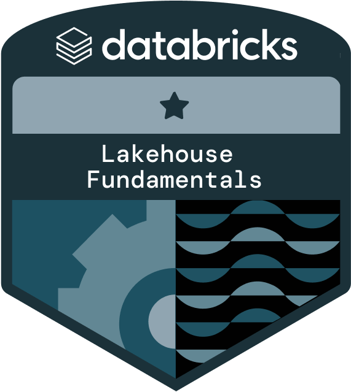

Professional Certifications
Validated technical expertise through industry-recognized certifications and continuous learning initiatives.
3
Total Certifications
2
Currently Valid
2024
Latest Earned

Amazon Web Services Certified Solutions Architect - Associate
Amazon Web Services Training and Certification
Earned: June 2024 | Expires: June 2027
Valid
Earners of this certification have a comprehensive understanding of AWS services and technologies. They demonstrated the ability to build secure and robust solutions using architectural design principles based on customer requirements. They are able to strategically design well-architected distributed systems that are scalable, resilient, efficient, and fault-tolerant.
Related Skills:
Amazon Web Services (AWS)
AWS Cloud
AWS Services
Cloud Architecture
Cloud Infrastructure
Cloud Data
Cloud Services

Amazon Web Services Certified Cloud Practitioner
Amazon Web Services Training and Certification
Earned: November 2023 | Expires: June 2027
Valid
Earners of this certification have a fundamental understanding of IT services and their uses in the AWS Cloud. They demonstrated cloud fluency and foundational AWS knowledge. They are able to identify essential AWS services necessary to set up AWS-focused projects.
Related Skills:
Amazon Web Services (AWS)
AWS Cloud
AWS Services
Cloud Technologies
IT Services
Cloud Computing
Cloud Services
Cloud Platform

Academy Accreditation - Databricks Lakehouse Fundamentals
Databricks Academy
Earned: June 2024 | Expired: June 2025
Expired
Earners of the Lakehouse Fundamentals accreditation have demonstrated the understanding of fundamental concepts related to Databricks Lakehouse Platform.
Related Skills:
Databricks
Lakehouse
Delta Lake
Databricks SQL